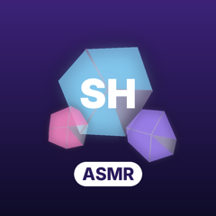

Swipe Habit UploaderPrivacy Policy
Last updated: 29 October 2026
Swipe Habit Uploader ("the tool") is a private publishing tool used only by the owner of the Swipe Habit YouTube channel. The tool uses YouTube API Services. By using the tool you also agree to the YouTube Terms of Service, and Google's handling of data is described in the Google Privacy Policy.
Information the tool accesses
- With the channel owner's permission (Google OAuth), the tool accesses the owner's own YouTube account to upload videos
(scope
youtube.upload) and to read basic channel details such as channel ID and title (scopeyoutube.readonly). - Video files, titles, descriptions, tags and schedules that the owner chooses to upload.
How the information is used
The information is used only to upload the owner's videos to the owner's own channel and to confirm the correct channel is selected. It is not used for advertising, analytics, profiling or any other purpose.
Storage and sharing
- OAuth access and refresh tokens are stored only on the channel owner's own computer, in a file readable only by the owner.
- No data is sent to any server other than Google's / YouTube's.
- No data is sold, shared with or disclosed to any third party.
- The tool does not collect any information about other YouTube users, viewers or commenters.
- The tool does not use cookies or tracking technologies.
Retention and deletion
Stored tokens are kept only while the tool is in use and are deleted from the owner's computer when no longer needed. Access can be revoked at any time from the Google security settings page: https://security.google.com/settings/security/permissions. After revocation the tool can no longer access the YouTube account.
Changes
If this policy changes, the updated version will be published on this page with a new date.
Contact
swipehabit@gmail.com